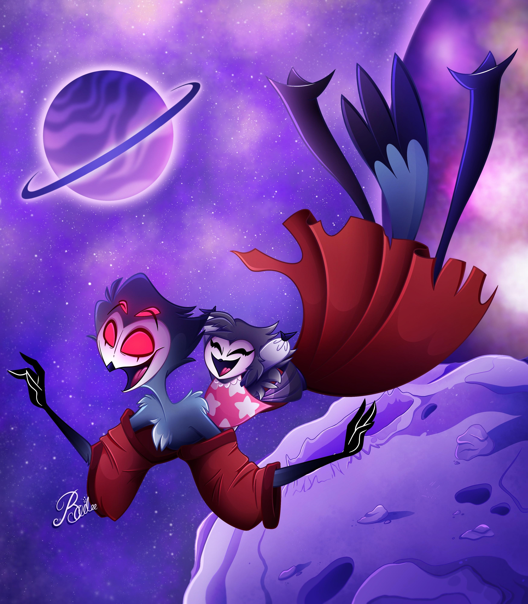
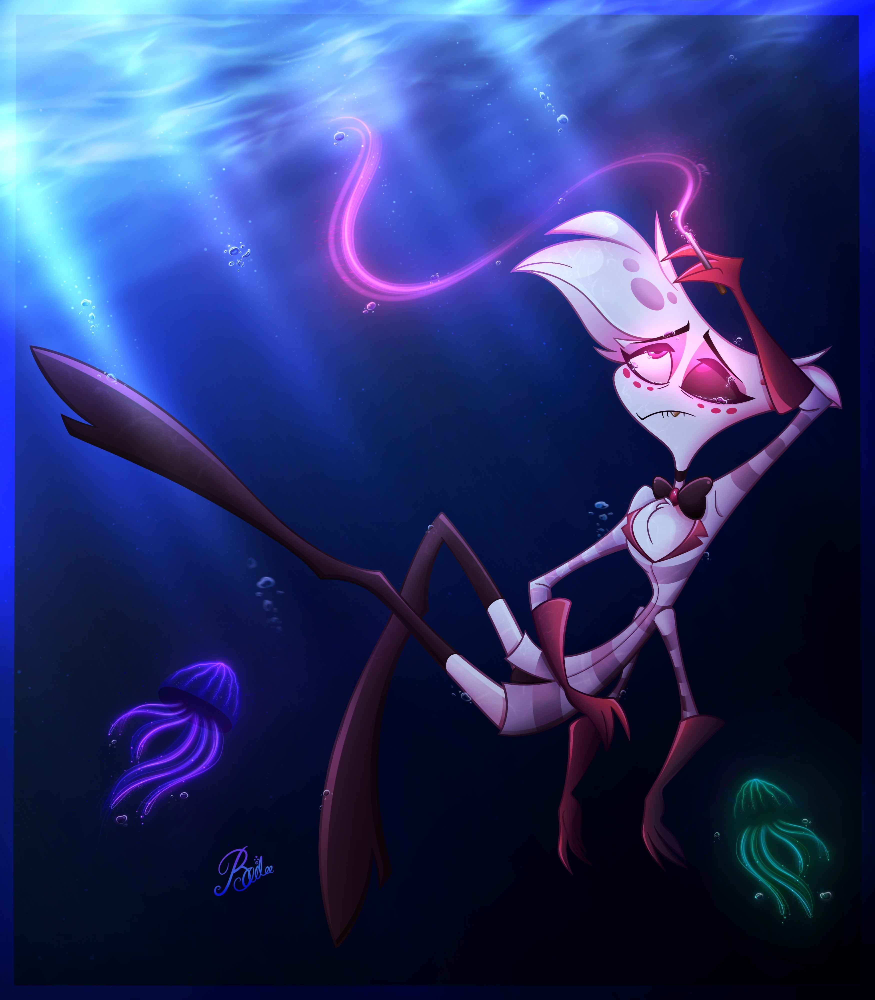
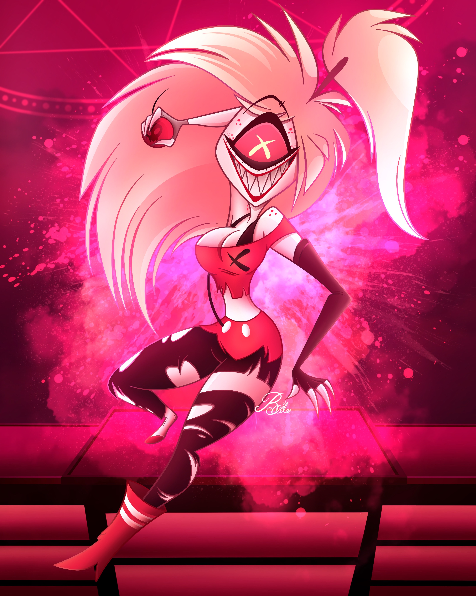

Charlie and Lucifer
Lucifer Magne is the king of Hell and father of Charlie Magne. These character designs were originally designed by the creator Vivziepop for her show called 'Hazbin Hotel.' In the show it's shown that Charlie and her father don't seem to get along well so I decided to draw an artwork of the two hugging together as a way to express a father daughter bonding moment. I designed the background myself trying to capture the look of Lucifer's pallace since there wasn't any referencs shown in the show yet. However I mainly drew a detailed background because I wanted to practice my skills and get into the habit of drawing actual scenes

Stolas and Octavia
Stolas is the prince of Hell and the father of Octavia. These charaters were designed by Vivziepop for her show called 'Helluvaboss.' In episode 2 Stolas takes his daughter to a fantasy space world while singing her a song called 'You will be okay.' I thought the scene was so beautiful I wanted to redraw it in my own style. I used a lot of references of the backgrounds and characters from the episode to capture the proportions however the posing and expressions I came up with on my own.

Angel Dust
Angel dust is an adult film star in Hell while also being Charlie's first client to being rehabilitated in her 'Happy Hotel.' This character was designed by Vivziepop for her show 'Hazbin Hotel.' This artwork was a redraw of another fanart piece from an artist that made a 'draw this in your own style' competition. So I gave it a try and this was the final result, we had to draw Angel Dust with a sad expression underwater smoking a cigarette with pink effects, I did change it up a little to make it more original. For example I changed the posing and lighting for my liking and added more detailed background, by adding realistic water, bubbles and sea creatures.

Cherribomb
Cherribomb is a cyclops demon in Hell who loves to cause explosions, destruction and all sorts of chaos. This character was designed by Vivziepop for her show 'Hazbin Hotel.' This artwork is an original fanart piece, the posing lighting expression and background was all done myself while also using references of Cherribomb from the show.
